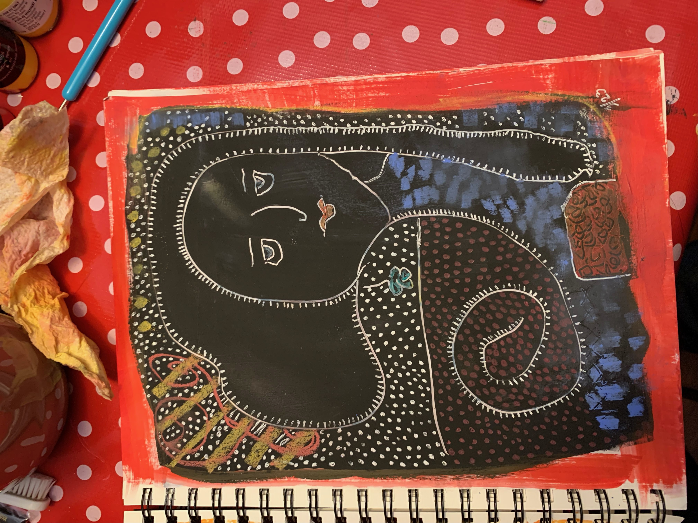

The Story Behind the Collection
Welcome to the home of Layered Lady Playing Cards, a collection of 10,000 unique digital playing cards. Each one is its own unique work of art. This project was born when my mom shared a piece of her art with me - it featured a woman made up of many "layers". 
This was right when I was learning generative art techniques, so I decided to take my mom's art as inspiration. I brought it into Figma, traced each layer, separated them, and created variations. I also added new layers like the playing card values.
The end result is a one-of-a-kind collectible trading card game and art experience. They are also NFTs, and now that I've created this collection, I can do anything I want with it. Each NFT will be verifiable on the blockchain, creating a permanent record and value for collectors. My goal is to keep adding utility - I want to host games, events, and more for holders.
Beyond just the art, this collection represents my journey back to the arts thanks to my mom's inspiration. As a kid, I was amazed by her constant tinkering and wide range of artistic crafts. I always wished I was that creative. Decades later, mom is still crafting away, and this digital collection tips my hat to her for motivating me to finally channel my own art.